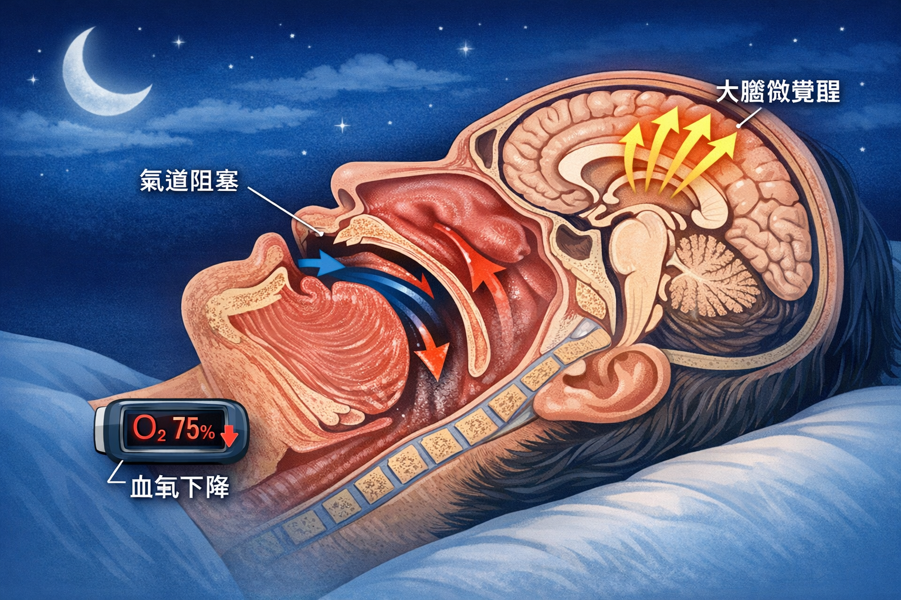
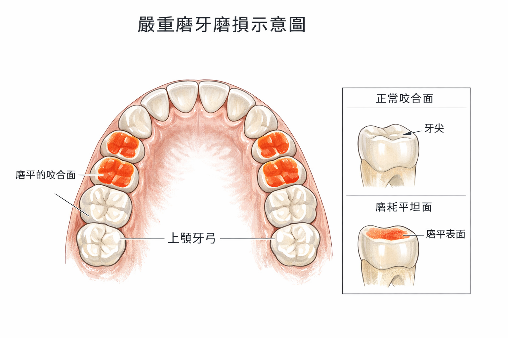

🎬 先想一個場景
早上起床，下巴痠、頭痛、牙齒敏感——或者家人說你昨晚磨牙聲音好大。
你去看牙醫，醫生說：「你壓力太大，裝個咬合板保護牙齒吧。」
但這個說法，只說了一半。研究發現，大多數的睡眠磨牙，根本原因是睡覺時氧氣不夠——你的身體在缺氧時，用磨牙的方式把自己喚醒。
🎥 相關學術簡報
本主題的學術簡報
以下簡報由趙哲暘醫師整理，資料來源為同儕審查學術文獻，歡迎線上觀看或分享。
🎨 AI 視覺圖卡
圖解：為什麼磨牙是大腦在救你？
以下圖卡由 AI 根據學術文獻自動繪製，用視覺化方式呈現 OSA 與磨牙的神經生理連結。
🧠
磨牙與OSA視覺說明圖卡
4 張 AI 插圖圖卡 · 氣道阻塞→磨牙連鎖機制 · 中文版
點擊開啟圖卡 →
▲ 點擊開啟 Gamma 互動圖卡 ｜ 資料來源：學術文獻整理，趙哲暘醫師審訂
🖼 醫學解說圖
磨牙與睡眠：視覺化關鍵說明
以下解說圖由 GPT Image 1.5 依據學術文獻繪製，精準呈現 OSA 與磨牙的生理機制。


圖像由 GPT Image 1.5 生成 ｜ 趙哲暘醫師審訂 ｜ 資料來源：同儕審查學術文獻
📖 基本觀念
磨牙是什麼？睡眠呼吸中止症又是什麼？
這兩個問題，其實是同一個夜晚故事的兩個主角。
| 名稱 | 縮寫 | 定義 | 常見症狀 |
|---|---|---|---|
| 睡眠呼吸中止症 | OSA | 睡眠中氣道反覆塌陷，導致呼吸暫停或變淺 | 打鼾、白天嗜睡、早晨頭痛、血壓高 |
| 睡眠磨牙症 | SB | 睡眠中反覆出現咀嚼肌節律性收縮（RMMA） | 磨牙聲、牙齒磨短、咬合肌痠痛、TMJ問題 |
| 胃食道逆流 | GERD | 睡眠中胃酸往上逆流，腐蝕食道和牙齒 | 胸口灼熱、口苦、牙齒酸蝕、夜間咳嗽 |
💡 關鍵：這三個問題共享同一個觸發機制——「夜間微覺醒」
OSA、SB、GERD 都在睡眠中的「微覺醒」時發生。微覺醒不是完全醒來，而是大腦短暫提高警覺，讓身體應對缺氧或刺激。這就是為什麼治療 OSA，往往能同時改善磨牙。
📊 數字說話
OSA 和磨牙有多密切？
39.3%
成人 OSA 患者同時有睡眠磨牙（Pauletto et al. 2022）
49.7%
OSA 患者中有磨牙（Li et al. 2022，n=914 PSG）
3.96倍
磨牙患者有 OSA 的風險比（Hosoya et al. 2014）
26.1%
兒童 OSA 同時有磨牙的比率
PSG = Polysomnography，多項睡眠生理監測，是睡眠研究的黃金標準
🔬 科學解釋
缺氧是怎麼引起磨牙的？
這個機制被稱為「OSA–磨牙級聯」，科學家用 PSG 儀器記錄到整個過程：
1
睡眠中，氣道軟組織塌陷
舌頭、軟腭等組織在重力和肌肉放鬆的作用下，往後掉，堵住氣道
↓
2
呼吸暫停 → 血氧下降（缺氧）
氣道被堵住的那幾秒到幾十秒，大腦和心臟的氧氣供應下降
↓
3
大腦發出「微覺醒」訊號
神經系統緊急喚醒咀嚼肌，試圖打開氣道——這個動作就是 RMMA（節律性咀嚼肌活動）
↓
4
RMMA 高峰 = 磨牙發生
咀嚼肌强力收縮，上下牙齒互相研磨——這就是你家人半夜聽到的那個聲音
↓
5
氣道暫時打開，繼續入睡
但下一個呼吸暫停很快又來——這個循環整晚可能發生幾十次，甚至上百次
🔬 還有一個更直接的證據
研究人員對 OSA 患者使用 PAP（正壓呼吸器）治療，把 OSA 控制住之後：
磨牙指數（BEI）從 5.5 降到 0（p < 0.001）
也就是說，治好 OSA，磨牙就消失了。這不是巧合，而是因果關係。
💡 很多人不知道
咬合板只是「保護傘」
如果你戴著咬合板，請先看看這個：
咬合板能做到的
- ✅ 防止牙齒磨耗（保護牙釉質）
- ✅ 減少牙齒敏感
- ✅ 保護修復體（假牙、貼片）
- ✅ 減輕下巴肌肉的部分壓力
咬合板做不到的
- ❌ 減少 RMMA（磨牙的神經訊號）頻率
- ❌ 治療睡眠呼吸中止症
- ❌ 改善睡眠品質
- ❌ 解決磨牙的根本原因
⚠️ 這代表什麼？
如果你的磨牙根源是 OSA，只戴咬合板，牙齒不磨了，但大腦缺氧、心臟負擔、血壓問題一樣繼續。磨牙的根本原因沒有解決，只是換個地方繼續傷害你的身體。
🔗 進階連結
磨牙還跟「下顎前推」有關
近年的研究更新了磨牙的定義：睡眠磨牙現在包含了下顎前推（mandibular thrusting）——這和逆吞嚥的舌頭推力行為高度重疊。
換句話說：白天逆吞嚥的舌頭推力、晚上的下顎前推磨牙——可能是同一套神經肌肉模式在白天和黑夜的不同表現。
🔺 OSA × 磨牙 × 逆吞嚥三角關係
這三個問題是一個三角：
- 逆吞嚥 → 舌頭位置低 → 上顎窄 → 氣道小
- OSA → 夜間缺氧 → RMMA → 磨牙
- 磨牙 → 下顎前推 → 進一步影響氣道幾何形狀
三句話總結
- 磨牙不是壓力造成的——真正的原因是睡眠時缺氧，大腦啟動「緊急喚醒機制」，引發咀嚼肌收縮。
- 咬合板只保護你的牙齒，它不能減少磨牙的頻率，更不能治療 OSA 或改善睡眠品質。
- 治療 OSA（例如使用正壓呼吸器）可以讓磨牙指數從 5.5 歸零——這是目前最有力的磨牙根治證據。
「磨牙不是因為壓力，
是因為睡眠時缺氧。」
是因為睡眠時缺氧。」
── 來自 OSA–磨牙神經生理學研究（Hosoya et al. 2014; Li et al. 2022）
🧪 快速自我測試
你的磨牙，可能和睡眠有關嗎？
回答以下問題，看看你的情況。
📝 6 道問題
1. 家人反映你睡覺有打鼾或呼吸聲很大
2. 早上起床，下巴、太陽穴或頭部會痠痛
3. 白天明明睡夠了，還是覺得疲憊或想睡
4. 牙醫說你的牙齒有磨耗（磨短、磨平）
5. 有時半夜會突然醒來，或睡眠不深沉、容易驚醒
6. 牙醫曾建議你戴咬合板，或你已經在戴了
❓ 常見疑問
關於磨牙與睡眠的疑問
我要怎麼知道我有沒有 OSA？+
最準確的方式是做「多項睡眠生理監測（PSG）」，俗稱睡眠多頻道檢查。可至醫院睡眠醫學科或耳鼻喉科申請。現在也有居家版的簡易睡眠篩檢（HST），方便性較高。如果你有打鼾、白天嗜睡、早晨頭痛、身體質量指數偏高，特別建議做。
治療 OSA 以後，磨牙真的會好嗎？+
研究上來說，OSA 治療（特別是 PAP 正壓呼吸器）確實顯著降低了磨牙指數（BEI），甚至能讓磨牙歸零。但每個人的情況不同——有些磨牙有多重成因（例如同時有逆吞嚥、咬合問題），這些也需要同步處理，才能達到最佳效果。
我只有壓力大的時候才磨牙，應該不是 OSA 吧？+
壓力確實會增加大腦的覺醒敏感度，可能讓已有 OSA 的人更容易觸發磨牙。但這並不代表原因是壓力——OSA 才是觸發的生理機制。就像壓力會讓頭更痛，但頭痛的真正原因可能是緊繃的頸部肌肉，不是壓力本身。建議不要因為「只有壓力大才磨牙」而排除 OSA 的可能性。
孩子也會有 OSA 磨牙問題嗎？+
會！兒童 OSA 的主要原因通常是扁桃腺或腺樣體肥大（腺樣增殖體），加上口呼吸導致的顎骨發育問題。研究顯示兒童 OSA 和磨牙共病率達 26.1%。孩子打鼾、張嘴睡覺、白天注意力不集中，都是值得評估的警訊。
胃食道逆流（GERD）和磨牙有什麼關係？+
GERD、OSA、磨牙三者共享「夜間微覺醒」機制。胃酸逆流刺激食道 → 大腦發出微覺醒訊號 → 誘發 RMMA（磨牙）。同時，OSA 增加腹壓，也會惡化 GERD。這三個問題常常一起出現，稱為「三重共病」，需要整合性的診療計畫。
📥 學術文件下載
本章學術整理文件
本頁所有數據均來自以下學術整理文件。歡迎下載完整版本，包含論文引用、量化數據與完整研究說明。
🔗 延伸閱讀